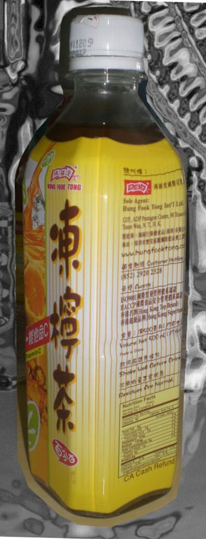
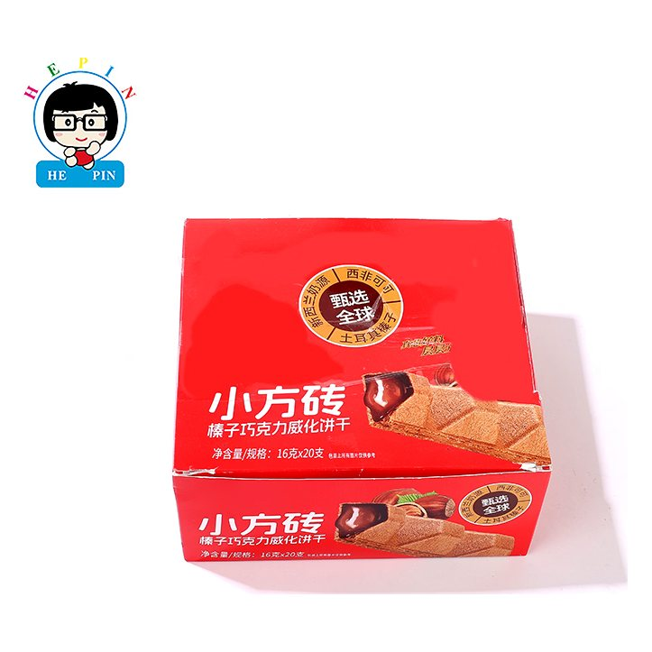

Start / Lebensmittel & Convenience / Gewürzgurken im Glas (Gherkins, Essig/Lake)

Abbildung ähnlich – zeigt den Produkttyp.
Lebensmittel & Convenience
Gewürzgurken im Glas (Gherkins, Essig/Lake)
Eingelegte Mini-Gurken 3–6 cm, Glas 400–850 g.
Technische Daten
| Größe | 3–6 cm |
|---|---|
| Glas | 400 g / 850 g |
| Lake | Essig oder Salzlake |
| Zolltarifnummer (HS) | 20011000 |
EU-Normen und Vorschriften
(EU) 1169/2011Lebensmittelinformationsverordnung (Kennzeichnung)(EU) 2023/915Höchstgehalte für Kontaminanten(EC) 396/2005Pestizid-Rückstandshöchstgehalte(EU) 2019/1793(EC) 1935/2004Lebensmittelkontaktmaterialien (Dose/Glas/Folie)
Weitere Produkte dieser Kategorie

Jasmin-Grüntee, lose (Schüttware)

Instantnudeln Rindfleisch-Geschmack (Beutel, ca. 105 g)Beutel-Instantnudeln mit Rindfleisch-Würze als schnelle, warme Mahlzeit für die Baustelle, nur Heißwasser nötig.

Reiscracker / Reisgebäck (Senbei-Stil), Beutel

Eistee / Tee-Getränk, PET-Flasche 500 ml

Jasmin-/Langkornreis, weiß (Sack 5-25 kg)Weißer Langkorn-Duftreis im Sack für Baustellenverpflegung, Kantine und Weiterverpackung.
Abgefülltes Trinkwasser, still (PET 0,5 l)Stilles abgefülltes Wasser in 0,5-l-PET-Flaschen zur Versorgung von Baustellenteams.

Instantkaffee 3-in-1 (Stick- bzw. Beutelware)Löslicher Kaffeemix aus Kaffee, Milchbestandteilen und Zucker für Pausenräume, Baustellen-Teeküchen und Kantinen.

Jasmin-Perltee 'Dragon Pearls' (handgerollter Grüntee, 100 g Dose/Beutel)Handgerollte Jasmin-Teeperlen aus jungen Knospen, mit Jasminblüten aromatisiert: die Premium-Stufe über dem losen Jasmin-Grüntee.

Instant-Glasnudeln sauer-scharf (Mais-/Süßkartoffelstärke, Schale ca. 105 g)Instant-Glasnudeln im Becher mit sauer-scharfer Sichuan-Würzung und separatem Chiliöl: die Trendvariante zu Instantnudeln ohne Fleischbrühe.

Gehackte Tomaten in der Dose, 400 g
Tomatenketchup, 500-g-Squeeze-Flasche (PET)

Schoko-Waffelriegel (gefüllte Waffel), KartonGefüllte Schoko-/Haselnuss-Waffelriegel, einzeln verpackt.

Paprikapulver edelsüß, Schüttware (60–260 ASTA)Gemahlenes Paprikapulver nach ASTA-Farbwert, tonnenweise.

Röstkaffee Bohnen, Arabica aus Yunnan

Tortilla-Chips (Mais), Röhre/DoseMais-Tortilla-Chips in Chip-Röhre, Handelsmarke, halal.

Kartoffelchips in der Röhre (160 g)Gestapelte Kartoffelchips 160 g, Handelsmarke, halal.